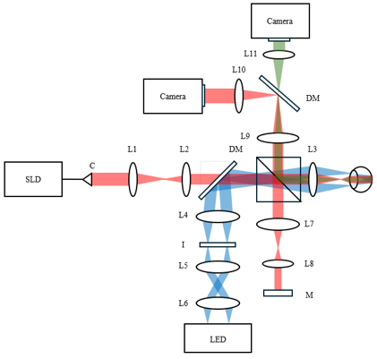
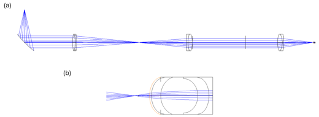
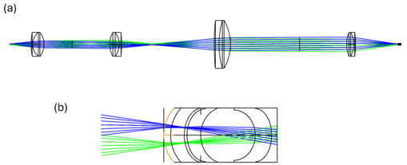

Design of Spatio-Temporal-OCT (ST-OCT)
Description:
I am responsible for the optical design of this future system. The system configuration will be handled by the following Ph.D. student.
System design

System diagram

Optical design: OCT illumination

Optical design: Funds camera